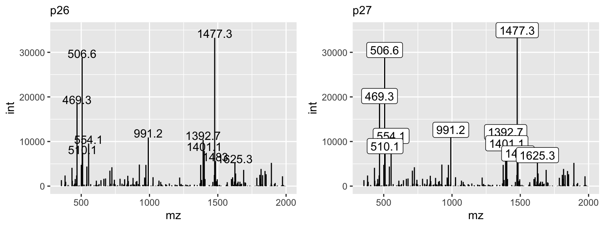
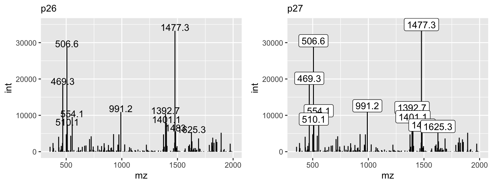

Chapter 10 Mass Spectrometry
 |
At the end of this chapter you should be able to
|
10.1 Data Formats
Accessing mass spectrometry data has some barriers due to vendors proprietary file formats. In recent years, vendors have been providing software development kits (SDKs) that allow programmers to provide direct access to the raw data. This is essential when developing fundamental workflows that require such data and also can enable analysis tools to bypass sometimes time consuming file format conversions to open formats. There are some means to access such raw data through R, allowing end-to-end pipelines to be developed directly from vendor data.
10.2 Commercial
10.2.1 RAW (Thermo)
rawrr : https://github.com/fgcz/rawrr The package provides access to proprietary Thermo Fisher Scientific Orbitrap instrument data as a stand-alone R package or serves as MsRawFileReaderBackend for the Bioconductor Spectra package. rawrr wraps the functionality of the RawFileReader .NET assembly. Test files are provided by the tartare ExperimentData package.
rawReadeR : https://github.com/wilsontom/rawReadeR rawReadeR is an R/C++ API to the MSFileReader.dll. rawReadeR allows for m/z profiles and scan header data to be extracted from .RAW files without the need for manual extraction using Xcalibur or conversion to a more universal format (.mzML, .mZXML, etc…)
10.3 Open Access Data
Mass spectrometry (MS) is a powerful analytical method that can be used to determine the mass-to-charge ratio (m/z) of ions in a sample. Mass spectrometry data is generated from MS experiments and can be stored in various formats, including mzXML, mzML, and mzH5.
ProteoWizard is an open-source software suite that provides a collection of open-source, cross-platform software libraries and tools for extracting raw mass spectrometry data from from various instrument vendor formats and converting it to the formats listed below.
_Kessner, D., Chambers, M., Burke, R., Agus, D., & Mallick, P. (2008). ProteoWizard: open source software for rapid proteomics tools development. Bioinformatics, 24(21), 2534–2536.
mzXML
mzXML is an open XML-based format for encoding MS data. It was developed by the Seattle Proteome Center and is widely used in the mass spectrometry community. mzXML files contain raw MS data, as well as metadata describing the instrument parameters used to acquire the data. mzXML files can be processed using a variety of software tools, such as the Trans-Proteomic Pipeline and ProteoWizard.
The mzXML format has been shown to be effective in handling data from a wide range of instruments. It has a simple structure that makes it easy to parse and process, making it an attractive choice for many researchers. The format is also relatively lightweight, which makes it easy to transfer and store large amounts of data.
Pedrioli, P.G., Eng, J.K., Hubley, R., Vogelzang, M., Deutsch, E.W., Raught, B., Pratt, B., Nilsson, E., Angeletti, R.H., Apweiler, R. and Cheung, K., 2004. A common open representation of mass spectrometry data and its application to proteomics research. Nature biotechnology, 22(11), pp.1459-1466.
mzML
The mzML format is another open XML-based format for MS data, developed by the Proteomics Standards Initiative. It is designed to be more flexible than mzXML and includes more detailed metadata. mzML files can be processed using software tools such as OpenMS and mzR.
The mzML format allows for more detailed and comprehensive data storage than mzXML. This is because mzML has a more complex structure, which enables the storage of a wider range of experimental metadata. The format is also more flexible, which means that it can be easily adapted to different types of experiments and instruments.
Martens, L., Chambers, M., Sturm, M., Kessner, D., Levander, F., Shofstahl, J., Tang, W.H., Römpp, A., Neumann, S., Pizarro, A.D. and Montecchi-Palazzi, L., 2011. mzML—a community standard for mass spectrometry data. Molecular & cellular proteomics, 10(1), p.R110. 000133.
mzMLb
Recently proposed as a new file format based on HDF5 and NetCDF4 standards, mzMLb is faster and more flexible than existing approaches while preserving the XML encoding of metadata. Additionally, it is optimized for both read/write speed and storage efficiency. The format has a reference implementation provided within the ProteoWizard toolkit.
Bhamber, Ranjeet S., et al. “mzMLb: A future-proof raw mass spectrometry data format based on standards-compliant mzML and optimized for speed and storage requirements.” Journal of proteome research 20.1 (2020): 172-183.
10.4 R Calculate Mass
Molecular mass is the sum of the atomic masses of all the atoms in a molecule. It is an important parameter used in various fields of chemistry. The molecular mass of a molecule is usually expressed in atomic mass units (amu) or daltons (Da). Mass spectrometry based measurements require a charge and are expressed as mass-to-charge (m/z) or as Thompsons (Th).
Isotopic probabilities are also important in determining molecular mass. Isotopes are atoms of the same element that have different numbers of neutrons in their nuclei. Isotopes of an element have different atomic masses. The isotopic probability of an element is the probability that a given isotope of that element will occur in nature. For example, carbon (C) has two stable isotopes, carbon-12 (12C) and carbon-13 (13C), with atomic masses of 12.000 amu and 13.003 amu, respectively. The isotopic probability of carbon-12 is 98.9%, while that of carbon-13 is 1.1%. Therefore, the average atomic mass of carbon in nature is 12.011 amu.
There are several measures of a molecular mass that can be reported. The average mass is that of the weighted average of all isotopes and likely to be reported for small molecules. While the nominal mass of a molecule is defined as the sum of the integer masses of the most abundant isotopes in a molecule. The monoisotopic mass is commonly considered the as the sum of the exact masses of the lightest isotopes, and this value is considered in all peptide-based proteomics applications.
BRAIN
Baffling Recursive Algorithm for Isotope distributioN calculations
R BRAIN is an isotopic abundance calculator implemented in R programming language and is especially useful for chemists and researchers who deal with complex molecules and need to calculate their isotopic composition accurately. In addition, it has a handy function for calculating the mass directly from an amino acid sequence.
Documentation | Bioconductor Literature | Analytical chemistry 2013 85(4), 1991-1994 |
Use
library(BRAIN)
# Human insulin amino acid sequence
str_seq <- "MALWMRLLPLLALLALWGPDPAAAFVNQHLCGSHLVEALYLVCGERGFFYTPKTRREAEDLQVGQVELGGGPGAGSLQPLALEGSLQKRGIVEQCCTSICSLYQLENYCN"
# get a list-object of atoms
lst_atm <- getAtomsFromSeq(str_seq) Calculate the average mass.
## [1] 11980.82Calculate the monoisotopic mass.
## [1] 11973.02Calculate the isotopic abundances (probabilities) mass.
lst_isotopes <- useBRAIN(lst_atm, nrPeaks = 20)
plot(lst_isotopes$masses, lst_isotopes$isoDistr, xlab='Mass', ylab='Probability', type = 'h') Calculate the isotopic abundances (probabilities) mass for a metabolite [C100H200S2Cl5].
Calculate the isotopic abundances (probabilities) mass for a metabolite [C100H200S2Cl5].
lst_atm <- list(C=100, H=200, S=2, Cl=5)
lst_isotopes <- useBRAIN(lst_atm, nrPeaks = 13)
plot(x = lst_isotopes$masses,
y = lst_isotopes$isoDistr / max(lst_isotopes$isoDistr) * 100,
xlab='Mass', ylab='Relative abundance', type = 'h')
10.4.1 enviPat
Isotope Pattern, Profile and Centroid Calculation for Mass Spectrometry
A new method (year 2022) for calculating theoretical isotope patterns in mass spectrometry. This method uses a treelike structure to derive sets of subisotopologues for each element in a molecule. By doing so, it allows for early pruning of low-probability isotopologues and the detection of the most probable isotopologue. The method was validated in a large-scale benchmark simulation.
Documentation | CRAN Literature | Anal. Chem. 2015, 87, 11, 5738–5744 |

10.6 R MS Analysis
Finally, there are numerous R packages that implement methods, common and advanced, in statistical post analysis of quantitative data. Explored here are only a few of the available packages.
MSstats
The MSstats package is an R package designed for the analysis of label-free mass spectrometry data. It provides a wide range of statistical tools for the analysis of protein abundance data, including normalization, missing value imputation, quality control, and differential expression analysis. MSstats provides a powerful and flexible way to analyze mass spectrometry data, making it an essential tool for researchers in the field.
|
Code | Bioconductor Literature | Bioinformatics 30.17 (2014): 2524-2526 |
Loading Data
The preferred data structure for use in MSstats is a .csv file in a “long” format with 10 columns representing the following variables: ProteinName, PeptideSequence, PrecursorCharge, FragmentIon, ProductCharge, IsotopeLabelType, Condition, BioReplicate, Run, and Intensity. Note that the variable names are fixed and case-insensitive.
ProteinName PeptideSequence PrecursorCharge FragmentIon ProductCharge IsotopeLabelType Condition
243 IDHC ATDVIVPEEGELR 2 y7 NA H 1
244 IDHC ATDVIVPEEGELR 2 y7 NA L 1
245 IDHC ATDVIVPEEGELR 2 y8 NA H 1
246 IDHC ATDVIVPEEGELR 2 y8 NA L 1
247 IDHC ATDVIVPEEGELR 2 y9 NA H 1
248 IDHC ATDVIVPEEGELR 2 y9 NA L 1
BioReplicate Run Intensity
243 ReplA 1 84361.08350
244 ReplA 1 215.13526
245 ReplA 1 29778.10188
246 ReplA 1 98.02134
247 ReplA 1 17921.29255
248 ReplA 1 60.47029msgrob2
msgrob2 is an R package that provides functions to perform robust estimation in linear models with missing data. With the help of the Expectation-Maximization (EM) algorithm, the package estimates the parameters of the linear model and imputes the missing data. Additionally, the package offers robust methods for estimating the covariance matrix, including the Minimum Covariance Determinant (MCD) estimator and the S-estimator.
The msgrob2 package is particularly useful in situations where data is missing from a linear model. The EM algorithm implemented in the package is a powerful tool for imputing missing data, and the robust covariance estimators allow for a better understanding of the data. The package is designed to provide efficient and accurate results when working with incomplete data, making it an essential tool for researchers and data analysts.
Documentation | PDF Code | Bioconductor Literature | Molecular & Cellular Proteomics, 15(2), 657-668. Literature | Molecular & Cellular Proteomics, 19(7), 1209-1219. Literature | Analytical Chemistry, 92(9), 6278–6287. |
Estimating Parameters
To estimate the parameters of a linear model with missing data using msgrob2, you can use the msgrob() function. The following code demonstrates how to use msgrob():
Estimating Covariance Matrix
To estimate the covariance matrix using msgrob2, you can use the covrob() function. The following code demonstrates how to use covrob():
# Loading Example Data
data("exMiss")
# Estimating Covariance Matrix
covrob(exMiss[,2:4], method = "MCD")In summary, msgrob2 is a comprehensive R package that provides an array of functions for robust estimation in linear models with missing data. The package’s implementation of the EM algorithm and robust covariance estimators make it an essential tool for researchers and data analysts working with incomplete data. The package is easy to install and use, with code examples readily available for reference.
Tidyproteomics
The tidyproteomics R package is a tool that provides a set of functions to preprocess and analyze proteomics data using the tidy data framework. This package is built on top of the tidyverse and Bioconductor packages, which are widely used in the R community for data manipulation and analysis.
Documentation | github Code | github Web App | tidyproteomics Literature |
Some of the main features of the tidyproteomics package include:
- Data preprocessing functions for common tasks such as filtering, normalization, and imputation.
- Functions for quality assessment and visualization of proteomics data.
- Integration with other Bioconductor packages for downstream analysis such as differential expression analysis and pathway analysis.
Figure 10.1: tidyproteomics workflow
Installation
To install the tidyproteomics package, you will need to install GitHub and Bioconductor repositories:
Data Summaries
Currently, tidyproteomics implements two summary quantitative visualizations. The first is a simple grouped bar chart that displays individual and grouped proteins, as well as all and unique peptides. The match-between-runs is shown as a margin above the MS2 evidenced identifications. In recent literature, a summary of protein quantitation has been visualized as a rank-based dot plot. This plot can be extended to highlight statistical differences via an unbiased all-pair-wise comparison, which gives an anticipated view on how to guide downstream analyses.

Summary Stats {-} Summarizing proteomics data is vital to understanding the bigger picture and conveying summary stats that set the tone for the larger analysis. The results of each summary can be directed to via the destination option to “print” on screen, “save” to a file or “return” as a tibble.
Normalization and Imputation
Quantitative proteomics requires accurate normalization, which can be difficult to implement. The normalize() function in the tidyproteomics package is a wrapper for various normalization methods, while select_normalization() automatically selects the best method based on a weighted score. Both functions allow for downstream analyses such as expression() and enrichment(). The package attempts to apply each function universally to peptide and protein values using the identifier variable to identify the thing being measured.
data_proteins <- data_proteins %>%
# normalize via several methods, best method will be automatically selected
normalize(.method = c("median","linear","limma","randomforest")) %>%
# impute with a minimum value (this is a knock-out)
impute(base::min)
# plot visualizations comparing normalization methods
p03 <- data_proteins %>% plot_normalization()
p04 <- data_proteins %>% plot_variation_cv()
p05 <- data_proteins %>% plot_variation_pca()
p06 <- data_proteins %>% plot_dynamic_range() 

# plot visualizations of unbiased clustering
p07 <- data_proteins %>% plot_heatmap()
p08 <- data_proteins %>% plot_pca()
Expression Analysis
data_proteins <- data_proteins %>%
# calculate the expression between experiment: ko and control: wt
expression(kndw/ctrl) %>%
# plot the expression analysis
plot_volcano(kndw/ctrl, destination = "png", significance_column = "p_value") %>%
plot_proportion(kndw/ctrl, destination = "png")Overall, the tidyproteomics package provides a useful set of tools for preprocessing and analyzing proteomics data using the tidy data framework in R. There are several more workable examples in the online documentation.